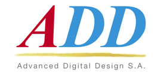
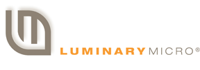
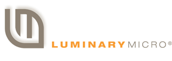

picoChip
picoChipI have over 25 years of web and multimedia design and development experience, combined with extensive knowledge of online marketing gained from working with in-house marketing teams and external marketing agencies.
2009 - present
The amount of work I do for Dialog has grown as they have grown. I have maintained their website through multiple iterations, rapidly integrating other sites as Dialog has acquired other companies. The long term technology strategy I have developed for Dialog has proven very successful, allowing us to support over 20 thousand customers across multiple diverse business units, and to rapidly integrate the content of other sites during acquisitions.
2010 - present
Electronic-Notes.com (previously radio-electronics) is a website dedicated to explanations of electronics. It serves around million page views a month, exceeding many other sector publications. I have had a long collaboration with the site owner. I designed the site, managed its technical development, improved SEO, and developed new ideas.
2020 - present
An expert evaluator for the IT component of EU Health Innovation projects, including fast-tracked Covid related projects.
2013-2016
Redux Sound and Touch create products and bespoke systems that enable customizable, high-resolution haptic feedback. I worked with their engineers to design and implement an interactive demonstrator of their haptic feedback product. The demo was created to look like an interactive touchscreen automotive control panel, with functionality to select music, make a phone call, etc. I used Javascript web-sockets to interface with their hardware.
I also designed and implemented the Redux ST website. Redux ST was acquired by Google in 2017.
2010 - 2016
I created two micro-sites for Ericsson Power to gather prospects. I also created an animated video which gave an overview of their technology, working with an actor to sync the video with the narration.
picoChip2003 - 2012
picoChip was one of the pioneers of the concept of the femtocell/small cell and the leading developer of femtocell technology.
I had a long and successful collaboration with the founder of picoChip, Peter Claydon, and VP Marketing Rupert Baines. As well as designing, implementing and maintaining their website, I created presentations for shows such as MWC and worked with their engineers to create interactive courses about their technology.
Picochip was acquired by Californian company Mindspeed Technologies Inc in 2012.
2009-2013
Audium created a highly power efficient audio power amplifier technology. The technology was a complex one to explain, and I developed a promotional video for it. The job was memorable because they only had a single demo unit which they could only lend to me for a couple of hours, so I look it to a nearby photography studio and got photographs taken from multiple angles. I then worked with an actor who did the demonstration, and I made a composite video using the photographs to make it look as though the demonstrator was using the demo equipment.
I also designed and implimented the Audium website.
2004-2009
I designed and implemented the Renesas Microchooser. The Microchooser was "the ultimate parametric search tool for 8, 16 and 32-bit microcontrollers, combining ease of use with instant results". It was very successful and went through five major revisions over a period of five years. The final version listed over 2000 products. It resulted in a significant number of high value prospect registrations (the last figure I have is for end 2006 - 4511 registrations).
I also developed the stand-alone website from the Microchooser, and the accompanying eshots.
2000-2008
Oxford Semiconductor developed a range of high-speed proprietary integrated circuits for use in data communications, storage, and connectivity. During an early stage of their development I created an interactive, animated presentation which the founder used to explain their technology to potential funders, which was successful. I also designed and implemented their website over two versions as the company grew.
Oxford Semiconductor was acquired by PLX Technology at the end of 2008.
2000-2003
I designed and implemented a promotional website for a Varta thin battery technology. The website included a 3d version of the Varta battery, which you could rotate. Different features of the battery were labelled as you rotated it.
2000 - 2005
I designed and implemented the Papst website, and created various interactive calculator tools.
I have worked on websites, animated advertising banners, eshots, interactive kiosks, videos and presentations for a variety of other clients. As well as clients in the electronics sector, I have done a number of very interesting projects for museums and non-profit organisations.
 
